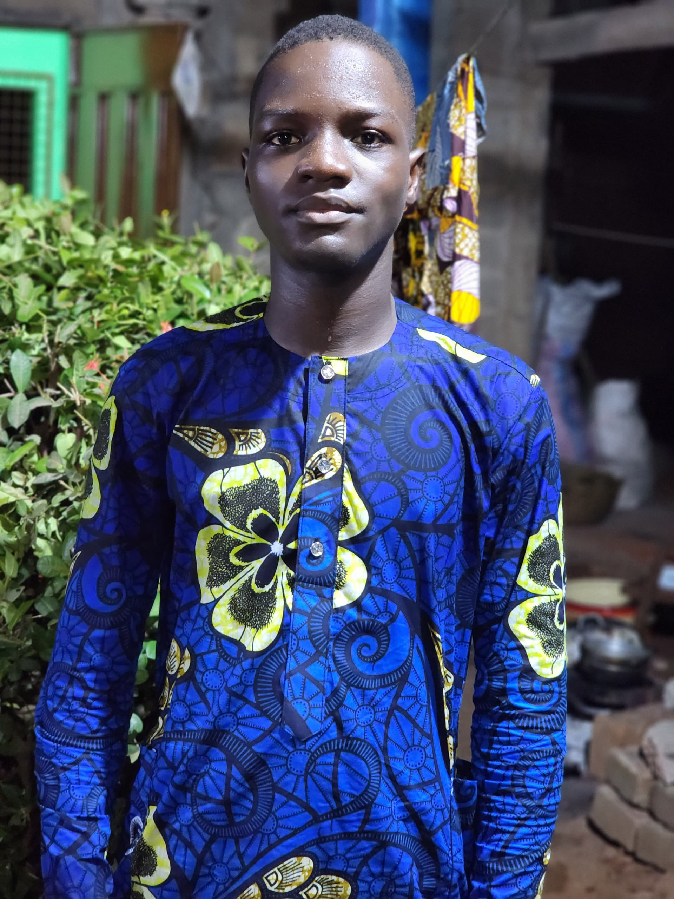

Mon CV
INFORMATIONS PERSONNELLES
- Nom: AYELESSO
- Prénoms: Olamidé Arimeil Précieux
- Sexe: Masculin
- Nationalité: Béninoise
- Situation matrimoniale: Célibataire
- Numéro de télephone: 61696611
- Adresse email: précieuxayelesso@gmail.com
- Profession: Licence1 en Informatique de Gestion

PARCOURS SCOLAIRE
Primaire
- Maternelle1 au CI à Nimalla Devi
- CP, CE1, CM1, CM2 au Berceau des merveilles
- CE2 à Saint-Paul
Secondaire
- 6ème au Berceau des merveilles
- 5ème en Tle à Application
Actuellement en 1ère année en Informatique de Gestion à l'ENEAM à Cotonou
Diplôme
- CEP en 2014
- BEPC en 2020
- BAC en 2023
Formation
J'ai fait un mois de formation en bureautique
ACTIVITES NON ACADEMIQUES
Judoka au club SAS à Charles de Gaulles à Porto Novo
CAPACITES LINGUISTIQUES-ATOUTS-LOISIRS
- Maîtrise courante du français à l'oral et à l'écrit
- Maîtrise courante de l'anglais à l'oral et à l'écrit
- Maitrise courante du Goun
- Maitrise de l'outil informatique
- Passionné de basket , de musiques urbaines, et de jeu vidéos
Je certifie sur l'honneur l'exactitude et la sincérité des renseignements ci-dessus